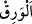

her ne kadar nasîhat verdiyse de fayda vermedi. Hak Teâlâ cesedin haşri konusunda
onları delil göstermek istedi ve Ashâb-ı Kehf’i uykudan uyandırdı. Kur’an bunu şöyle
anlatır:”
“Böylece biz,” sonsuz kudretimize delâlet eden bir âyet olsun diye onları uzun süreli
bir uyku ile uyutup bedenlerini çürümekten, elbiselerini eskiyip toprağa karışmaktan
koruduğumuz gibi “onları dirilttik” uzun süreli uykularından uyandırdık “ki
birbirlerine sorsunlar.” Bazıları diğerlerine sorsunlar da bu hususta verilmesi gereken
apaçık hüküm ortaya çıksın.
“İçlerinden biri:” reisleri olan Maksimilian: Uykunuzda “Ne kadar kaldınız?”
dedi” Herhalde bunu, uyandıkları andaki durumları alışılagelenden farklı olduğu için
demiştir. Bunun üzerine bâzıları: “Bir gün ya da günün bir parçası kadar kaldık”
dediler.” Onların böyle söylemelerinin sebebinin şu olduğu söylenir: Onlar mağaraya
sabahleyin girmişlerdi. Uyandıklarında ise günün sonuydu. Onun için “Bir gün kaldık”
dediler. Fakat güneşin henüz batmadığını görünce: “Ya da günün bir parçası kadar
kaldık” dediler. Bununla birlikte onların bu ifâdeleri, zann-ı gâlib üzeredir. Onun için
bu sözlerinden ötürü onlara yalan isnâd edilemez.
Kâşîfî der ki: “Onlar mağaraya sabah gelmişlerdi. Baktılar, güneşin kuşluk vaktine
ulaşmış olduğunu görünce “Burada bir veya iki gün ya da günün bir kısmında yahut
gündüzün bir bölümünde kaldık, uyuduk.” dediler.
Fakir (Bursevî) der ki: “Bu, öncekinden daha uygundur. Çünkü âyetteki “içinizden
birini şu gümüş paranızla şehre gönderin” ifâdesi, gündüz henüz şehre gidip gelecek
kadar bir vakit kaldığına delâlet eder. Yoksa eğer uyandıklarında vakit güneş batmak
üzere olsaydı, mağara ile şehir arasındaki uzaklıktan ötürü âdeten geri dönme imkânı
olmadığından içlerinden birini göndermeleri uzak bir ihtimal olurdu.
Ashâb-ı Kehf’ten bazıları, ortaya çıkan delillere bakarak ya da Allah katından
kendilerine bahşolunan ilhamla “şöyle dediler:” Kâşifî şöyle der: “Kendi tırnaklarını
ve başlarında saçlarını uzamış bulunca birbirlerine şöyle dediler:” “Rabbiniz,
kaldığınız müddeti daha iyi bilir.” Sürenin uzunluğundan ötürü siz burada ne kadar
kaldığınızı bilemezsiniz. Bunun miktarı size kapalıdır. Ne kadar kaldığınızı ancak Allah
bilir. Böylece daha önce bahsi geçtiği üzere mağaradakilerin iki gruba ayrıldıkları
anlaşılmış oldu.
“Şimdi siz, içinizden birini” Yemliha’yı “şu gümüş paranızla şehre gönderin”
dediler. Durum, onların bilemeyeceği kadar karışık olduğu için meseleyi fazla
araştırmayı bir tarafa bırakarak ve durum gereği kendileri için gerekli olana yönelerek
böyle dediler.
Âyetteki “__WORD__ el-verık” aslında basılmış ya da basılmamış gümüş para demektir. “Şu
gümüş para” denilmesi, konuşan kişinin, onunla arkadaşlarına bir günlük azık alınması
için o parayı diğerlerinden aldığına delâlet eder. Ashâb-ı Kehf’in uyandırıldıktan sonra
bu karara varmaları, azık almanın tevekküle mâni olmadığına delildir. Aksine bu, sâlih